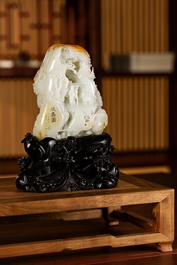

作者：顾永骏 中国工艺美术大师 中国玉石雕刻大师
规格：15.0*12.3*8cm 2286g
《夜宴—顶级玉雕艺术品专场》拍品

此件作品由顾永骏先生作于1981年秋。顾永骏是扬州山子雕的代表人物，被誉为“中国山子雕第一人”。其在玉器创作中，借鉴乐中国画的表现手法，杂糅中国画的构图、线条，自成一体。其作品也被外界评价为“书卷之气，大家之气”。此件作品由扬州玉器厂流出后一直藏于藏家之手，后时隔20余年，顾大师于2005年再次见到此件作品时感慨万千，并与藏家及作品亲切合影。合影流传至今，为作品背书的同时也增添了作品的收藏价值。
祝寿图是中国传统吉祥图画，表达出祈望老人健康长寿的美好祝愿。此山子由和田玉籽料独籽雕就，玉质温润滋泽，结构细腻，白度亦佳，并有大面积洒金皮色与润美玉质相映成趣，黄白相间，更添雅致，且玉料极为老熟，仅原石价值即为不俗。作品深浅浮雕运用自如，层次清晰鲜明，景物布局巧妙，树石云水，亭台楼阁，仙鹤翱翔，人物穿插其间，形象生动细致。在和田玉籽料价值日趋上涨的当下，此类玉质佳美、工艺精湛的玉雕山子，值得关注。